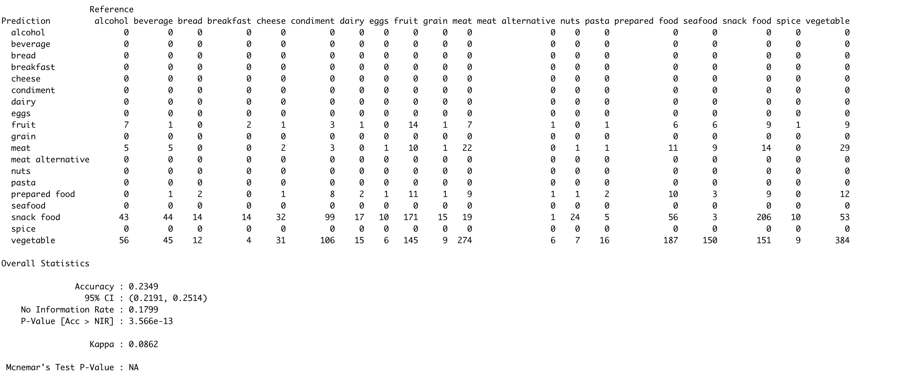
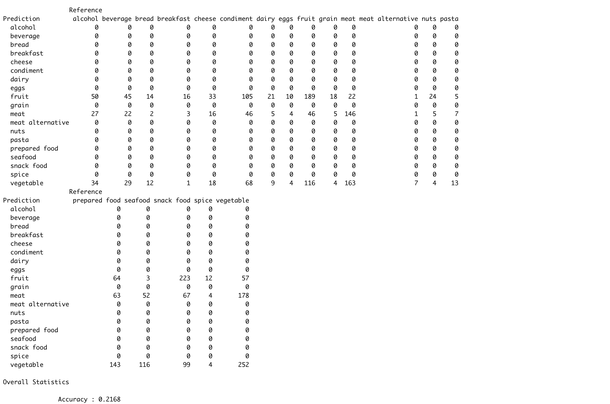

Food Network's Chopped is a game show consisting of three rounds: appetizer, entree, and dessert. In each round, contestants are given a mystery basket containing a few ingredients to prepare a dish expected of the round's course (ie an appetizer, entree or dessert). Kaggle user Jeffrey Braun compiled data regarding more than ten years worth of episodes including air date, judges, basket ingredients (by round), and contestant information. This project attempted to predict basket ingredient types (ie meat, vegetable, fruit, snack food, etc.) based on features of the episode, specifically the round in which the ingredient would appear and the proximity of the episode air date to a holiday. (Note that proximity to a holiday and ingredient are not original features of the dataset but were derived based on the variables air_date, appetizer, entree, and dessert.
To predict basket ingredient types, we used three predictive models. Two of the three models were k Nearest Neighbor Models, one which predicted the ingredient type based on basket round and holiday where holiday was a categorical variable that identified the holiday nearest to the episode air date if any (ie. Categorical variable with occurences such as Valentines Day, Christmas, etc.). The other kNN model used holiday as a binary variable that took value 1 when there was a holiday relatively close to the air date and 0 if not. The final model we used to predict basket ingredient type was a Naive Bayes model using the same variables as the first kNN model.
The main result of this project is that proximity to a holiday and the round a basket is seen in are not good predictors of the type of ingredient occurring in a basket despite there seemingly being a relationship. All three models had accuracies just over 20% with the second kNN model having the lowest accuracy at 21.68% and Naive Bayes having the highest accuracy at 24.41%. Noticeably, all three models consistently over-predicted the occurence of vegetables and tended to predict the ingredient types fruit, meat, and vegetables correctly. This is likely due to a greater presence of these ingredient types in the data. Future iterations of this project might consider different approaches to preparing the data by labeling ingredient type and might consider a smaller scope.
The figures to the left show that winners of Food Network's Chopped™ are often Executive Chefs, are based in NY and are male. But as you can see, other winners exist outside of these categories. Next, we will utilize data visualization and predictive modeling to prepare future contestants for what might be in their basket, thereby increasing their chances of winning.
By viewing the bar charts to the left, we see that there is not a significant difference in the types of ingredients that appear in the baskets during different seasons of the year.
Through looking at the dataset, it appears that there is a relationship between the proximity of an episode's air date to a holiday and the basket ingredients in an episode. For example, a number of episodes that were specified as Thanksgiving themed or that aired around Thanksgiving included basket ingredients connected to Thanksgiving such as a whole turkey and pumpkin pie flavored ice cream.
For appetizer and entree rounds, we observe that the three most common basket ingredients are vegetables, prepared foods or meats. However, for desserts the three most common basket ingredients are snack foods, fruits and condiments. This suggests that we may be able to predict basket ingredients based on the course the basket is being created for.
Many people enjoy watching game shows on television for entertainment and especially enjoy considering how they might perform if selected to participate in a game show themselves. Food Network's chopped is a game show in which contestants (often chefs and homecooks) are given a mystery basket of ingredients and asked to create either an appetizer, entree, or dessert. Generally, we associate particular types of ingredients with different courses of a meal, for example we see fruits or chocolate in desserts more often than we see them in entrees or appetizers. Naturally, one might expect that this trend holds true for ingredients included in baskets for Chopped. In preparation for their participation, future contestants might be interested in seeing if these trends hold true and if not, what types of ingredients are most likely to occur in each round.
The dataset used contains data for around 550 episodes of Chopped spanning over a ten year period starting in 2009. This dataset includes the season the episode aired in, the episode number, the number of the episode in the entire series, the name of the episode, the air date, contestant info, judges info and information about the ingredients in the appetizer, entree and dessert rounds. Since the data gives specific details about each episode, performing analysis in its raw form would likely not help in identifying patterns or getting good predictions. To increase the useability of the data, we transformed some of the given measures into a new set of categorical variables including meterological season and the job title and location of each episodes winner. Most importantly, from the air date variable, we created a variable that identified the holiday in closest proximity to the air date of the episode if any. Then, we gave each appetizer, entree, and dessert ingredient a type such as fruit, vegetable, prepared food. We then used these variables in the above sections to identify whether there was a relationship between ingredient types and a given variable. We concluded that there appears to be a relationship between the nearest holiday and the ingredient types as well as the round and the ingredient types. Using this information, we built three predictive models with holiday proximity and round as predictors. For each model we used 60% of the original data set as a training set and 40% as a validation set.
The first of the three models we built was a k Nearest Neighbors model. In this model, we used a categorical variable to describe the proximity to a holiday where the levels of the variable were holidays such as Valentines Day and Christmas. The round variable was also categorical and included levels "appetizer", "entree", and "dessert". We chose to consider a kNN model based on the assumption that the producers of Chopped might methodically pick basket ingredients as opposed to picking randomly. The model was created using the kNN function in the class package of R. We evaluated the accuracy of the model on the training set for values of k between 1 and 100 and identified the best value of k as k=41. Using this value, we ran the model on the validation data and observed the resulting confusion matrix. As we can see in the following image, this method had an overall accuracy rate of about 23.49%. We see that, of all the categories, only fruits, meats, prepared food, snack foods and vegetables were ever predicted correctly. Furthermore, we see that snacks and vegetables were predicted more often than any other category. These two observations are likely due to the prevalence of these categories in the dataset as they appeared more frequently than other categories such as spices or pasta.
Next, we attempted another kNN model. This time, the holiday variable was transformed into a binary variable that took value 1 if there was a holiday reported in proximity to an episode air date and 0 if not. The model was built and tested in the same way as the initial model. Here, k=92 was determined to be the best value of k. In the image of the model's confusion matrix below, we see that the accuracy of the model was about 22%. The model only predicted fruit, meat, or vegetable for the ingredient type, which likely resulted in the lower accuracy. The model only predicting those three ingredient types is likely a function of classifying proximity to a holiday as a binary variable. There are more episodes that do not have a holiday in close proximity to the air date than there are episodes with a holiday nearby and those ingredient types appear more frequently than some others, so reducing to binary may have suggested a relationship between those ingredient types and there not being a holiday nearby.
The third of the three models was a Naive Bayes Model. For this model, we used R's naiveBayes function from the e1071 package to build the model based on the training data and used it to predict on the validation data with the name of the nearest holidat and the round name as predictors. Here, we noticed that the Naive Bayes model predicted vegetables and snack foods most often, similar to the most prominent predictions of the two kNN models. To evaluate the model, we compared the accuracy of its performance on the training data to its performance on the validation data. We saw that in both cases, the accuracy of the model was slightly more than 24%. In other words, the model performed just as well on the validation data as it did on the training data. Furthermore, this model performed better than both kNN models. We suspect that the Naive Bayes model performed better than the kNN model due to the limited values of k we considered (between 1 and 100). In general, we expect that Naive Bayes will perform better than kNN because it does not require a parameter but perhaps considering larger choices of k might have led to better performance by the two kNN models.
In this project, we found that proximity to a holiday and the round a basket is seen in are not good predictors of the type of ingredient occurring in a basket despite there seemingly being a relationship. Future iterations of this project might consider reducing the possible ingredient type categories to main groups (ie fruit, vegetables, meats, grains) and using an objective labeling system to determine how a food fits into each category. Another area for improvement might be to look specifically at one ingredient type and assign subclassifications and predict the subclassification based on these features and additional features. For example, considering only occurrences of fruits in baskets then creating subclasses such as berries, melons, etc and predicting a datapoint as belonging to this subclass based on season, round, etc.